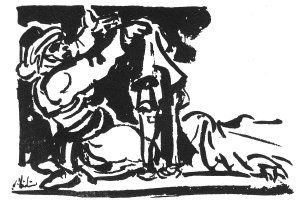

HACI DURDU AĞANIN AĞIDI
Andırınlı Yaycıoğullarından Hacı Durdu Ağa öldüğünde, 1910 yılı, bu ağıdı karısı Meryem Hatun söylüyor.
Tabiyeden yaya kaçmış
Fesini kurşun alınca
Bizim hısımlar genişsin
Kızları da dul kalınca
Irak mı Kabenin yolu
Engin mi tubanın dalı
Kızım babanı bilmez misin
Beş yüzlük kuşanır şalı
Hani gelmedi yiğeni
Salakta avlar doğanı
Aşiretin Ağas'öldü
Esnaflar örtsün dükkanı
Ben yoruldum siz ağlayın
Yas çekin kara bağlayın
Tekrar Kabeye niyetli
İnşallah Kudüse uğrar
Geçer Meryemçil belinden
Kim tutar benim elimden
Sızlaşmayın kuzularım
Allah geçer mi kulundan
Oğlum askerden gelince
Halebi dolandı atı
Bu sonradan ağa değil
Eşiraf hanedan zatı
On ay oldu hasta yatar
Atı kişner kuşu öter
Sen olmazsan kul olduğum
Camiler medrese batar
Bana öğüt verme Hoca
Tesbih çeker gece gece
Bir kez yüzün sürdü geldi
Bir daha niyetli Hacca
Neren arttı kul olduğum
Ak bebeğe vurulunca
Yıldırım düştü sanırdın
Aşirete darılınca
On ay oldu hasta yatar
Nasıl hısımsınız sizler
Bundan sonra beyden düşer
Kara giysin gelsin kızlar
Altmış beygir ile göçer
Benim de günlerim geçer
Tiryaki kurban olduğum
Haşdırında kahve içer
Salakta turaç avlatır
Meydanda adam çiğnetir
Kızım baban'bilmez misin
Zeytinde atın oynatır
İki sene daha yaşa
Gözümün önü ışısın
Ağam kahveye meraklı
Ahmet köpüklü pişirsin
Eri ciğerciğim eri
Maşlah kara hırka sarı
Ali edem karşı getirmiş
Davada boşanan kırı
Kapısında on uşağı
Hersli bıyığın geveler
Hacı, Bilal katarlamış
İşliğe gitmiş develer
Halepten doldurmuş hurcunu
Kesmiş Kaymakam harcını
Aşiret helal eylesin
Varsa istesin borcunu
Genişsin Sevinsin, rahatlasın.
Salak Ova, düzlük, alan. Çeltik salağı, yaygındır. Büyük tarlalara, bin, bin beş yüz, üç bin dönümlük sahalara salak denir. Bir de büyücek düzlüklere, ovalara, sahalara salak denir. Salakta avlar doğanından da ne demek istendiği anlaşılıyor.
Örtmek Güneyde Türkmenler örtmeyi kapamak anlamına da kullanırlar. Kapıyı, pencereyi ört, gibi.
Halebi dolandı atı At askerden gelen sahibini görünce sevincinden ne yapacağını bilmiyor. Atı Halebi dolanmak, sevinçten uçmak anlamına.
Ali edem karşı getirmiş / Davada boşanan kırı Hacı Durdu Ağa mahkemeye gitmiş. Atı kasabada boşanıp eve gelmiş. Ali Ağabey de atı Ağaya geri götürmüş.
Gevelemek Çiğnemek.
Hersli Öfkeli.
